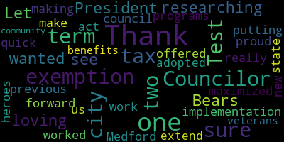
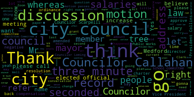
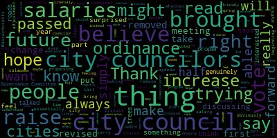
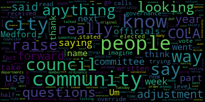

AI-generated transcript of City Council 11-12-24
Back to all transcripts
[Collins]: Test one two.
Test one two.
[Bears]: 21st regular meeting Medford City Council November 12 2024 is called to order Mr please call the roll Council Callahan, Vice President Collins Council is our Council Lemming, Councilor Scarpelli, Councilor saying, President, President bears present seven present none absent the meeting is called to order please rise to salute the flag.
Announcements accolades remembrances reports and records records the records of the meeting of October 29 2024 pastor counselor Callahan counselor Callahan how did you find those records.
On the motion of Councilor Callahan to approve seconded by seconded by Councilor Collins Mr. Clerk please call the roll.
[Hurtubise]: Council Callahan, Vice President Collins, Councilor Lazaro, Councilor Lemming, Councilor
Councilor saying President bears.
[Bears]: Yes, 70 affirmative negative the motion passes.
Refer to committee for further discussion just a reminder that the intent of this section is for us to refer items to committee for further discussion, no final action will be taken on these items during this meeting.
24491 resolution to discuss compensation ordinance for elected officials.
It looks like there's an amended version resolution to discuss ordinance to disallow the city council from passing any salary changes that affect sitting elected officials by councilor Callahan.
Whereas only the city council can change the salaries of Medford elected officials, mayor, city council and school committee.
And whereas there's no way for elected officials to adjust elected official salaries for inflation or general cost of living increases without the city council voting to change elected official salaries.
And whereas there is a personal incentive for city counselors to increase their own salaries, whereas the city council increasing salaries that are increasing salaries of others is viewed as in form of impropriety and be it resolved that this governance committee take up an ordinance to disallow the city council from passing any salary changes that affect sitting elected officials and to encourage city council to consider Cola adjustments for elected officials in the next cycle.
I would just note before turning this over for a brief, I hope, discussion or introduction by the proponent before the motion to refer to committee that I don't think an ordinance would affect this at all we already have three charter and state laws that affect this so as a plan a charter chapter 4317 a.
already applies to the city.
Chapter 71, section 52 governs how school committees are compensated.
And then the acts of 2002 chapter 447 is a Medford specific law that would supersede any ordinance passed by the city.
So the way to go at this is with charter amendment, not with an ordinance.
But with that, I will go to Councillor Callahan.
[Callahan]: Thank you.
I would note that I forgot to remove that last half of the sentence so at the bottom of full text and description before the potential language.
It should also remove and to encourage the city council to regularly to consider regular cola adjustments that whole half should be removed, because I removed all of that, that that would be my revised.
As I stated in January at the meeting, I believe that, I know that this is the law in a number of states.
It is also the law in some other cities in Massachusetts.
And essentially what it says is that you can vote to change the salaries, but they can't take effect until after the next election.
And that is essentially what I'm proposing be discussed in the governance committee.
It probably makes sense if, like, if we vote this to the Governance Committee, when the Governance Committee takes it up, for the very first thing be to send it to legal to see whether it could even be passed by an ordinance, or we could do that from here.
Because if it can't be passed by an ordinance, and it can only be passed by a charter change, then obviously there's no point in us discussing it.
So I'm happy if that's the first step.
[Bears]: We're on the motion of Councilor Callahan to refer to governance committee seconded by Councilor Collins, excuse me, please wait.
Thank you.
Any further discussion by members of the council.
Councilor Scarpelli.
[Scarpelli]: resolution stated that it go to governance committee to discuss COLA raises.
So now it's that, so in essence, this is saying that the city council shouldn't be voting for their own raises and that's it.
I'm confused.
I'm just.
[Bears]: Well, what I can say is that state law controls here no matter what, but I will go to councilor Callahan.
You've amended your resolution.
[Callahan]: Yeah, thanks to reply.
So what it what this always was even from the beginning was to disallow any future city council from voting to increase their own salaries.
And then in addition, I had it.
put on the agenda to discuss whether the future would have a color adjustment.
But, you know, as I was discussing them with this with some of my volunteers.
Somebody brought up the point that that really doesn't belong in an ordinance, it's not in the other cities ordinances, that would simply be up to city counselors to bring that up as something if they feel like bringing it up.
So the important meat and potatoes of this was always what I have here, which is making it no longer legal for city councilors to increase their own salaries, but simply to vote to increase the salary of a future city council.
That's always what this was about.
And I simply removed the part that really shouldn't be part of an ordinance, but would be at the discretion of city councilors in the future.
[Scarpelli]: if I can, because I received numerous calls, as you can imagine, because the way it read really alarmed a lot of people.
This has been a very trying week, both on the national level and also in the local level.
And part of the discussions and making sure that the residents know is that
you know, after such a close vote and half of the community split over the override and so much contention still left in the community to divide the fact that we had elected officials, especially the mayor dancing in celebration that half of the community is going to be in pain.
Um, to add this, the next day was so, you know, for the next meeting was very, very touching.
Um,
I just I don't know where this is.
We have our own ordinance.
We have our own rules.
It seems like the way I read it is someone maybe talked to you.
Your friends might have talked to you and told you don't do this the day after an override vote because
this community needs a lot to heal.
And in the process that we went through and the questions we had with the original raise, I don't even understand why this is on there.
I would imagine you should rule it out of order, Mr President, just for the fact that, as you already stated, these are things that we've already had in place.
And again, as as the senior member of this council and understanding
you know historically why people join this council in the past is really being part of the community and looking at this position as a full-time position should never be looked at a full-time not Medford maybe in a major city but in the city of Medford to even look at a salary adjustment in any way to move forward I think it's totally disingenuine especially the week that we had last week so I would um
My I will know anyway, but I would hope that this would be ruled out of order and disperse because this doesn't say anything.
It said something early that really riled the whole community up and then looking for a cola when we have we have departments that haven't gotten a raise in years.
We have
We have city departments that go three years without raises or colds.
So that was something that just to let you know, this is what I'm saying this out loud.
So the people that are watching because they were very interested in what was being said tonight that to
to review this isn't, hopefully this isn't asking for any sort of Kohler adjustment like other communities or anything like that.
Until we take care of our own here, I think that we should stay away from this completely.
Stay away from any money paper when it's talking about funding this council a penny more after fiscal crisis and what we went through on Tuesday.
So thank you, Mr. President.
[Bears]: Thank you.
Yeah.
And I would just note again,
The existing law for the school committee is Chapter 71 Section 52, which means we have to do that.
And the existing law for the city is the Mass General Law Acts of 2002 Chapter 447, which I think was an attempt to in 2003 to try to get this to be more of a something that happens as
part of the course of other folks, specifically that says that the mayor and the council salaries would increase the same amount as the director of budgets, finance director, director of community development, city clerk, city treasurer, city solicitor, chief assessor, the average percentage for those offices.
So those are the current laws that apply.
Any further discussion from members of the council before I go back to Councilor Callahan?
Seeing none, I'll go to Councilor Callahan.
[Callahan]: I'm sorry, I have to comment here because I am really.
I brought this up.
I'm supposed to speak to the chair, because I literally was trying to appeal to I think the people who are here because of misinformation.
I brought this up because I wanted to make sure that the city council could never again vote for their own raises that is what this was always about.
It did absolutely not suggest that we have coal increases every year or anything of the kind.
If you read the original that I wrote, and look, I can understand if some people read it very quickly and did not understand what that said, but the only thing that it mandated is that no future city council could ever vote to increase their own salaries.
So I will say that I am feeling surprised that I am trying to bring forward things that I believe the people who are here would genuinely want to be passed, genuinely.
And yet somehow, the part that said like, hey, maybe it should be like,
on an agenda to consider, which does not mean that it should happen.
Like, that is the thing people focused on instead of focusing on the only actual thing that it did, which is to make sure no city council could ever vote for their own raises, and I'm surprised that Councilor Scarpelli wants a future city council to vote for their own raises to be able to raise their own salaries.
This is the only thing that it does.
So, I'm...
I am surprised and I hope that people will read what is actually being proposed instead of making assumptions based on who is putting something forward.
What does it say?
That's what it says.
I mean, read it.
It says no city council, no change in the salary
[Bears]: So first of all, that has been removed and that's like... I think the problem is that we didn't need to have this discussion right now.
That's the issue.
I mean, I just think this is a waste of everyone's time to be completely honest.
There's a law in place.
And in fact, the city council and the mayor, like what the law is, is that when other people's salaries go up, the senior management of the city, the council and the mayor salary would also go up by that same average percentage.
That's the current law on the books.
That's what happened in June.
So I think there's misrepresentation on all sides of what happened.
And I think that's just my perspective.
And I apologize for
just giving my opinion from the chair without recognizing anybody else, but I just didn't like, really don't think this is a productive conversation on any front, because everybody seems pretty confused and frustrated on all sides.
There was a motion to refer it to committee.
It was seconded, Councilor Zaro.
Give me one second.
Go ahead.
[Lazzaro]: I appreciate Councillor Callahan bringing this forward with the intention of following your genuine hopes to put forward something that would
What the original suggestion here was, was that council would vote for a cola increase, which is a cost of living increase for a future if they wanted to for a future city council not for themselves.
It wouldn't take effect until the next two years, if it if it ever did.
That is what she intended, I believe.
That's my understanding.
Meaning you could never and that is true for some other cities, but it's part of their charters.
So this this wouldn't be something that we can put in as an ordinance.
My understanding is you would have to do it as a charter.
So that's why it would be referred to governance, we could talk about it in the governance committee.
That's where we talk about charter changes.
I don't think we need to discuss it in a regular meeting, we could talk about it in governance, and I think that's fine.
I also think that voting publicly for cost of living increases for ourselves that people can witness and if they can, if they are upset about that and I think a 2% increase for a body that
makes currently $29,000 a year, 30,000 maybe.
If you want to vote us out because of that increase, that's fine.
That's your right as voters.
And I think that's fair.
And we're doing it transparently.
We've decided to do it and you can vote us out if you don't like that we did it.
Because that's a democratic choice that you can make.
All of that being said, I think it's bad faith to see what was written and
argue that Councilor Callahan was trying to say, we will like across the board, give ourselves insane increases.
And that that is what this discussion is about tonight.
I don't think that's what's happening.
I think we know that.
I know that, I understand that.
And I, if we haven't, if we don't have a second on moving us to governance, then I would second it.
Well, I think that we should move it.
[Bears]: Thanks.
I'm gonna go to Councilor Leming, then Councilor Scarpelli, Councilor Leming.
[Leming]: I'd also like to point out that people are confused about this because an organization that Councilor Scarpelli is in the leadership, I've sent people out an email saying that this was what was written in the ordinance.
So if you send an email.
[Bears]: I'm just gonna let him finish and you can go.
[Scarpelli]: Why would you say that?
I'm not part of any group, I'm a member of many groups, but to say that you use my name in that?
I can use the best metrics in so many different ways that this person did, and just embarrass my community.
[Bears]: Well, I think we just did a very good thing for our community, but...
[Leming]: I mean, you can't send an email out saying that this is what it's about.
[Scarpelli]: I didn't send anything out.
So don't use my name.
[Bears]: Let's not get back and forth, guys.
[Scarpelli]: Use my name.
[Bears]: I hear you, but let's not go for it.
[Scarpelli]: It's a meeting, tell them.
[Bears]: We went through the chair.
[Leming]: You're causing confusion and saying there's confusion in the community.
[Bears]: You did publicly represent the organization, so...
People talk about me and our revolution from this council floor all the time, George.
Do what, George?
Okay, people are just saying what they want to say, George.
You say a lot of stuff all the time.
I'll let you talk.
Any further discussion?
All right.
[Scarpelli]: The comments that have been said around this oval that we're talking about, these are conversations I've had with people that have reached out to me.
And what was said, what was written in the original may be changed after someone woke up.
But whereas the Medford School Committee recently went 24 years without a cost of living adjustment, COLA.
So now this starts to think, well, what does it say?
They're looking for COLA.
These are the questions they asked.
be it resolved that the governance committee take up the ordinance to disallow the city council from passing salary change to affected city officials, and to encourage the city council to consider regular color adjustments for elected officials.
That's exactly what it says.
I didn't say it wasn't for next year, but what I'm saying is the phone calls I received and the understanding that I'm trying to explain to my people, and if those people are my people, the ones that
that the 60,000 that live in this community, those are those people that had those questions after a very contentious election cycle on Tuesday night, and then put this forward the way it was written.
You could spin it any way you want today, but that's how it was written, and that's why there were questions.
So any organization to put on email that spun anything anyway, take it for what it's worth.
Because this councilor over and over again, whenever I brought anything forward, have backed it up with video or specific instances that all of you have witnessed.
So these are makeup things that have been going on here.
Thank you.
[Bears]: Thank you.
Councilor Callahan.
[Callahan]: I hope that people can discuss what is on here with the removal of that second half of the thing because this is the only thing that is being proposed.
[Bears]: All right, there's a motion to refer to committee.
Is there a second.
All right, then we any further discussion by members of the council.
Members of the public, three minutes, same address for the record, please.
We'll alternate between Zoom and in person.
You can go.
[South]: Mr. Chairman, can you hear me?
[Bears]: You can go.
[South]: Steve South 106 Damon Road.
Thank you.
So I just wanted to tell you, Mr. Chairman, Councilor Callahan, and whoever else was behind this, the level of disrespect towards...
[Bears]: I wasn't behind this, so thank you.
[South]: Well, it's your organization, like Mr. Leming said, your organization is putting this forward.
[Bears]: There's no organization behind this.
[South]: So our revolution, one week after the... Why don't you let me finish?
You gave me three minutes.
[Bears]: I just, you can't lie.
[South]: So our revolution puts forth this proposal one week after the election, where almost half the electorate voted down seven and eight, question seven and eight.
You can yawn all you want, and you and your little dancing monkey at your after event, okay?
[Bears]: Mr. South, if you're gonna be disrespectful, we're not gonna continue here.
[South]: No, I can say whatever I want.
Maybe you don't understand the freedom of speech.
[Bears]: Mr. South, if you're gonna be disrespectful.
[South]: So I'm gonna continue.
So all the while while Councilor Callahan and our revolution are looking for raises for elected officials that already got you voted to raises for yourselves this year, the city council got to the school committee got one big one this year and one big one next year, the mayor got three raises this year because she's on the school committee and
a city official, she got three raises in the first item, the very first item you bring up after the election where you and your organization said there was going to be huge pain and huge cuts.
If these overrides didn't go through, you bring up raises for yourselves.
Now Councilor Callahan, her first draft, which I just saw her second one a minute ago, talked about regular COLAs.
Even the second draft talks about wage increases and other increases.
Now I want to bring up some facts for you guys because you love talking about misinformation and disinformation.
The City of Medford DPW superintendents
building inspectors and recreation department haven't had a raise in three years.
Currently, we're in fact finding which is part of mediation, and the city is demanding huge concessions of the $7200 per person, and is also looking to cut their fuel allowance you can yarn all you want.
The police do not have a contract.
The police superiors do not have a contract.
The dispatchers don't have a contract.
So the level of disrespect, let alone the dancing at your little after party, but putting forth a discussion about raises for yourselves right after the election, where you were asking for huge
tax increases for the homeowners which five of the 7 you don't own homes is disrespectful.
You should be ashamed of yourself, Mr Chairman.
Thank you.
[Bears]: Thank you, Mr. South as you know the city council does not negotiate union contracts, and this was proposed by one counselor.
I don't support it.
I don't think it was something that we should be bringing up right now but we can continue to say whatever we want for political purposes.
I don't know what that means.
I don't know what that means.
There's no overseers.
Thank you.
Well, you can believe, sir, please stop.
You're an embarrassment, Mr. South.
Get out of here.
You should leave.
Mr. Self, on the motion to recess.
No, I don't, I don't.
If you can't handle, you need to work a little better at that.
And you maybe need to go to a little anger management.
You're disgusting.
[RECESS]: ...
[Bears]: The emotions are running a little high.
We'll go to the podium, name and address the record.
And Nadine, if you're here in person, I'm guessing your hand's not up here on Zoom.
All right, you're good.
It just would have been your turn.
All right, name and address the record.
You have three minutes.
[Navar]: That's right, there you go.
William Navar, 108 Bedford Street, apartment 1B.
All right, here's what this is about.
A couple of years ago, the city council got in, about the same time as it works with our election schedule, school committee got in.
All right, that's what happened.
And then the city council, this body, passed a rule, law ordinance, can't think of the right word at the minute, that said they're gonna get a raise in school committee.
And a lot of people were very upset.
that raise took effect more or less immediately, or maybe at the end of the fiscal year or something.
This rule that Councilor Callahan is proposing would have prevented that, Mr. President.
People who thought that was bad, corrupt, obnoxious, annoying, whatever word they want to use, would have gotten some respite from that because it would have prevented that raise going into effect until the election would have intervened.
That's all this proposal is.
I understand there's ordinance.
I don't understand the way all of the exact rules go together, but I think that Councilor Callahan makes a good point that maybe that was a mistake.
Should have been against the rules.
It was a process issue.
Wasn't about individual personalities.
This person hates this one.
This one thinks this.
No, it's just about, no, for good government perspective, we're not doing it this way no more.
Whether that goes to the ordinance charter statute,
It could be a council rule even, just the chair will not entertain kind of thing.
Lots of ways you could do it.
I think it's a good thing to discuss.
It would have, I think, brought some sanity and a little bit of calvity to the discussion that happened at the beginning of this term.
And it would have made it a less urgent issue.
It could have made things calmer, more normal.
And it would have had this benefit at that time.
a good government measure to prevent anybody being seen to correctly give a raise to somebody who was just elected at the premise of a salary that had been published before the election.
That's all this is.
It makes a lot of sense to me, Mr. President.
If this isn't the right venue, I'm sure that that could come out and the council could act appropriately.
But that's all this is, it just would have prevented that going through would have deleted 30 seconds.
Thank you, Mr. President, I think I've said enough.
I appreciate the opportunity to speak on this issue.
[Bears]: Thank you.
We'll go to the podium name and address the record please you have three minutes.
[Giurleo]: Nick Jorleo 40 Robinson Road.
Before I criticize this resolution I'll just say, I'm sorry, President bears you had to go through that that was very inappropriate.
We probably disagree on a lot of things but nobody deserves to be treated like that so I guess
[Bears]: It is what it is
[Giurleo]: we have to have civil discussions
[Bears]: I'm behind the podium and I'm going to restart your three minutes because you're nice to me.
[Giurleo]: Thank you.
I appreciate that.
So now for the criticism.
There's mentioned in this resolution here of cost of living, a cost of living increase.
[Bears]: Let's just let him, let's just go through.
And the initial one that mentioned it, the counselor has edited it to remove it.
[Callahan]: I have revised it.
This is the revised version.
[Giurleo]: Okay, well I wasn't aware.
[Callahan]: It's not there, it is gone.
[Giurleo]: Okay.
Totally, totally gone.
Great, so that makes it.
[Callahan]: This is all the branches, and this is what I'm trying to do.
[Giurleo]: not attacking you, the version of the resolution that I had in front of me said that, so I didn't know that that was taken out.
[Bears]: We're going back to three minutes.
[Giurleo]: Thank you.
In any case... I should be nicer to you more often.
We can have civil discussions in the city council, we really can, even though we disagree.
But I'll speak about just in general then the cost of living issue.
You know, our city, these overrides, this is what it was all about.
I mean, this is what was raised as a problem, cost of living crisis across the country.
I mean, we saw in the national election here that cost of living crisis really impacted voters.
It really made a difference.
It led to a very unexpected outcome.
So it's something that can't be, in any context, when we're talking about raises,
something that can be disregarded here.
And we have to take, you know, what people are experiencing, what people are feeling, what people are suffering through into consideration.
I mean, we can't be forgetting, as Bernie Sanders himself said, the working class people.
I mean, we have to think about that.
We have to think about the impact of our fiscal decisions.
So that's just my general comments tonight.
Thank you.
Thank you.
[Bears]: School Committee member Bramley, you will have three minutes.
Name and address for the record, please.
[Branley]: Nicole Bramley, 54 North Circle.
I am a current member of the Meffitt School Committee.
And when I saw this, I was a little surprised.
So I'm happy that it's been revised.
Thank you.
I think it going to committee to be talked about further is a good idea.
But I would just like to have some of these things kept in mind.
I did ask Mr. South if he wanted me to go first, maybe I should have went first.
I just wanted to remind everybody that as I took office in January, our salary was $12,000.
We received a $5,000 raise come July 1st, and we'll receive another $5,000 raise next July 1st.
So our salary will go from 12,000 to 22,000.
that is our part-time position.
It is not lost on me as an elected official here in this city that we are considered part-time employees.
right, but we are, you know, asked to be at everybody's beck and call 24-7.
And that's not lost on me, especially being on this side of the podium.
I've stood here for years talking, but you do have a different perspective when you cross the rail.
People reach out to you on a Sunday, like many of you may be talking about this,
motion, this resolution, like Councilor Scarpelli, I too have received a lot of calls and people inquiring about this, this resolution and, you know, people expect you to be there when when they send the email they expect you to be there on a Sunday if if they don't like what they see when they when they read the, you know, the paperwork for the meetings so that's not lost on me that we are part time employees, but
You know, people do want you to show up all the time and I and I can respect that because I expected it when I was here, demanding change.
So, I think, going into committee, I don't know if I'm at three minutes but I'm being really nice so just keep that in mind.
So just want to also remind people that
There are a lot of unions in the city, as Councilor Scarpelli said, that don't have raises, that are fighting, I think, close to three years for the police department.
The fire department went three years.
Other unions in the city that don't have raises.
I sit in those executive sessions where we talk about contracts regularly.
It is not fun.
Budget season is horrible.
It's really horrible.
I lost a lot of sleep and I don't feel comfortable that we would get any more raises or anything else put forward for us.
So just to keep in mind that, you know, if the line of COLA or anything else that gets put forward for an elected official matches, no more then.
what other unions in the city would get.
I don't think that we need anything more, but I think that if unions are getting 2% or 1%, that we should not get anything more than that either.
So I just wanna make sure that that is brought up and talked about and kept in mind for your future meetings.
[SPEAKER_13]: Thank you very much.
[Branley]: Thank you guys.
[Bears]: Name and address for the record, you have three minutes.
[Lori]: Lori, 55 Garfield Avenue.
I just have a few questions.
I think that this proposal, was this corrected one distributed?
Because most people saw the other one.
That's why all your confusion, because you didn't send out your correction until today.
Sounds a little convenient.
My question is about,
your salaries.
These positions, I've grown up in this city and I've watched the council meetings for years, and you're a little disrespectful with your 30 minute call people are in the middle of their thought process, and you just like two seconds left, and
It like, maybe that's your tactic, I don't know, but I've never heard in all the school city council meetings that I've watched or been to, was there a time limit for a resident to speak on an issue?
I think that's a bit disrespectful in itself to the citizens of the city.
And as far as your salary goes, these jobs were never salaried positions.
As you mentioned, they're part-time.
Well, back in the day, I'd like to get Pinter or Mallorca or one of those guys up here and find out what they were getting paid is their stipend, because that's what it was.
You were serving the city.
It was your desire to serve the city and you got a stipend for that.
It wasn't meant for a full-time position or a salary.
I don't understand that.
And the fact that it was such a close margin on the vote yes or no on six, seven and eight was so close.
I think it was very disrespectful to bring this up as an agenda item.
It was like sticking it in our eye that we just got a 10% tax increase.
And for me personally, that's $560 a year, not $47 as everybody was trying to spout it to be.
You are killing the senior population in this city and then have the nerve to bring up raises.
Most people haven't had a COLA raise in the last at least four years.
And even prior to COVID, the average raise was a 2% raise, if you were lucky.
My company was trying to do bonuses in lieu of raises, which wouldn't go into our retirement fund at all.
So I think it's very disrespectful of all of you to bully the citizens in this city over some of these issues.
[Bears]: Thank you for your time.
name and address for the record you have three minutes.
[Moretti]: Do you put it on or do I. You're good.
[Bears]: It's a new system.
[Moretti]: Oh, okay.
Nadine already burgered out.
I was home watching this meeting, and as you saw my hand was raised.
What prompted me to come down was what was erupting in here.
And, you know, I just I actually watched the meeting because of that resolution and I said I can't believe that something like this is on this I'm probably just reiterating what everybody before me has said.
We voted no on six, seven and eight.
Okay, I'm sure you don't find that surprising.
So we're very upset to see that seven and eight past, but my when I look at the city council.
I don't want to think of people that all you can think about is what you make and what you don't make.
I've been coming to city council meetings for years, and I just don't think that
the atmosphere in here is healthy for the city, you, you, we know you who you represent, and it is not me it's not many people that I'm friends with, or hang out with or whatever, but it's still not, it's very disheartening to see what I saw that prompted me to get in my car, leave my dinner mind you to come here to speak, you know I said, you know, take my name off the thing but it didn't come down.
I think that this is insane.
I don't think that worrying about even if you guys are still going to be on here in the future years what you might or might not make you already got raises.
you just put a huge increase for most of the city who did not want this.
And that should be really what's in the back of your mind.
You're still not working for everybody.
And it's so disheartening.
But to see what's erupting and who's yelling and who's calling names, and I would never think this should come from behind the bench or whatever it is behind here, especially the lead or the president.
You should table it or put it away for now, because it's a moot point.
You do not need more money.
You need to help the residents that did not want the raises, who will be struggling.
Somebody just told you what it's going to raise.
It's not fair.
You have to sit back and think about this.
It's really not about you guys.
You're representing us.
I only voted for one of you here.
I'm not afraid to admit that.
And I'm sorry, you know, and for good reason.
You have one person working for people like me.
And I just, it's disheartening to see what's going on.
So I really hope you guys rethink this and you just get rid of it altogether.
I don't know what the rules are, but there's no need for it.
[Bears]: 30 seconds.
[Moretti]: I'm done now, thank you.
[Bears]: Thank you, Nadine.
I'm gonna go to Zoom real quick and then we'll come back at Stone.
I'm gonna go to Ken Garrow on Zoom.
Ken, name and address for the record for this little three minutes.
[Gareau]: Ken Garrow, 52 Lambert Street.
[Bears]: Oh, you're sounding a little funky there.
How about this?
That's better, yep.
[Gareau]: Cool, just projection towards my iPad.
52 Lambert Street, apartment number three.
First of all, President Behrs, I'm aware that you're saying that the ordinance itself isn't needed given state law.
However, I did see the All Medford email that Councilor Scarpelli is a board member of.
[Bears]: Thankfully, I actually was able to... Councilor Scarpelli has just noted that he is not a board member.
...organization that I follow.
[Gareau]: Okay, he says he's not a board member noted I saw that in a prior Facebook post apologies counselor.
However, Councillor Callahan.
I actually do like this ordinance in terms of things.
I do think it's actually excellent that you're at least thinking of the fact of trying to make sure councils do not raise funds for themselves in a sitting session.
I think it's a brilliant idea to make sure it follows for things that may not impact you yourself in a future session.
I was able to, because of the clerk portal, actually look up the original ordinance that you had proposed, not the amended one.
I know you're saying the amended one is not needed, or has the cost of living removed, but it's, I think, important to note,
If that was to happen in the future, one of my, my comments that I was wanting to make was, it would be nice to put the cost of living separately as an ordinance or budget meeting.
Just so additional transparency.
But again, it's great having the portal available.
President Baird, Councilor Levin, you both know that if I have questions about any financials, I tend to harass you guys pretty quickly.
And you're always really quick to respond and I greatly appreciate that.
I also appreciate the fact that you were very open in terms of and not artificially inflating
how much was trying to be raised by the city, because I do believe that added to some of the contention in the past several months with amount of fear mongering.
So thank you very much.
Have a great night.
[Bears]: Thank you.
We'll go to the podium name and address for the record, please.
You have three minutes.
[Fiore]: Thank you, Mr. President.
Gaston Fiore, 61 Stickney Road.
Just a few comments specifically about what Councillor Callaghan proposed, the latest one, and then some other general comments.
So regarding the latest, the one that got just handed out right before the meeting.
So I would add to, for example, the examples that are provided with Everett and Watertown,
Not only that, whatever gets approved applies to the council that comes after the following election.
But, um, I would like to remind everyone that, you know, as least is here the mayor the city council and the school committee, you work for us, you work for the taxpayer.
and we pay your salary.
And as such, I think it would be nice to add that.
So if you vote for any races, since it will apply after the following election, put it on the ballot.
And ask the taxpayers, do you actually vote yes or no for this salary increase?
Since you work for us, we pay your salary.
So that's what I would add.
Second, just a few general comments.
I think this was mentioned before as well.
Most of the problems with this happens because we forget that, again, so people in the city council or school committee are supposed to do this as a service to our community.
And I commend you all for doing that.
And as such, you're supposed to get a stipend, not a salary.
And I think that would be a lot easier if we kept a limited government that just took care of administering the city and do, in the case of the City Council, just legislative work.
And I would like to provide, lastly, the example of what I love in this regard, which is the legislature of New Hampshire.
I don't know how many people know this, but in the legislature of New Hampshire, in both chambers, so all state representatives, that's the state representatives, it would be the equivalent of Representative Donato for us, and the state senators, their salary is $200 per term.
That means $100 per year plus daily commute cost covering.
$100 per year plus daily community expenses.
So I think that's the example that we should follow.
Thank you very much for listening, Mr. President.
Thank you.
[McGill]: Name and address for the record, you have three minutes.
Harry McGill repeat my road method, so I'm pretty sure we beat the ordinance thing to death but I will say that it was, it was very confusing.
I was going to send a message to Councilor lemming to get some clarification because we've been going back and forth and he's been helpful clarifying things but I said I'll just go to the meeting.
I don't think any municipal bargaining unit in the city has ever got a legitimate COLA raise.
They've all been, for the last probably 15 to 20 years, 2% or less.
We don't see the threes.
We don't see fours or unheard of.
So when you say the word COLA, that's going to get people's attention, because the cost of living is probably over 4% or 5%.
Again, as far as the overrides went, yeah, it was a close vote, a lot closer than I actually thought.
So I think a lot of people should pay attention to that.
I think you're all gonna have your hands full with citizens calling to get their streets replaced.
Because as a guy that's been working police details for over 20 years, watching how we do it, I'm just not seeing that you're gonna get the curb to curb street replacements for that, for what was, you know,
uh, published in that, in that, um, question.
And finally, because no one else really knows, no one talks about it.
Your police department, both, both associations have going on two and a half.
We're going to be three years without a contract.
It's going to probably be settled in arbitration.
When it gets settled in arbitration, it will be expired.
So when we come before you with the settlement, you're going to be funding an expired contract and we'll be right back at it.
We're not going public.
We're not making a big deal.
We're kind of in the background.
And you know what we're doing?
We're doing our jobs and we're doing them well.
I have to say, I'm seeing this from a different level now.
I was president of the patrolman's union for a lot of years.
I'm the vice president of the supervisor's union now.
And those police officers on the street right now are dealing with much, much more than we were dealing with five, 10 years ago.
They have a tough job, a very tough job.
They came to work during COVID.
They never complained.
They did their job.
We had police officers having to be put up in hotels during COVID.
There's no COVID money on the table for the police department.
And that's okay.
I get it.
We just come to work.
We do our jobs.
They need to be taken care of.
Those officers that are out in the street need to be taken care of.
They're taking firearms off the street.
They're doing a tremendous job.
And I don't know if the public knows how good a job they're doing, because no one talks about it.
All I've been hearing for the last two years, teachers are going to get a big pay raise because we had an override.
Good for them.
The police department, the fire department, and the DPW are just as important to the operations of this city as the school department.
Thank you.
Thank you.
[Castagnetti]: Name and address for the record, you have three minutes.
Thank you, Council President Andrew Castaneda, Cushman Street, East Method Mass.
I walked in here a little bit late.
Please excuse me.
And there's a lot of yelling and screaming.
It was like a hornet's nest.
What the heck happened?
I'm sorry for the lack of civil order or whatever.
However, it seems to me that
It's something to do with salaries for the City Council, am I right?
[Bears]: I believe the proposal as it stands is that the City Council could not increase its own salary or the salary of any other elected official until, if an increase were to go into effect, it would go into effect after the next election.
[Castagnetti]: Basically, I have two simple questions.
One is, what is the Memphis City Council, what is your salary or stipends all totaled per year?
[Bears]: The current compensation is, I believe $30,400.
Thank you.
30,000 what?
400, I think.
And other stipends or other funds, US dollars come into your?
[Castagnetti]: into your hands also besides that no really well not from the city of medford for this job you don't get stipends for papers and pencils i thought you did no no oh thank you for confirming that yeah uh my second question is uh with all your brains and all your computers can you tell me where method ranks out of the 351
communities in Massachusetts, as far as your salary, what is the rank, Boston's 110, Buck 25, they got a raise I think last year, but what do you rank at 30,400?
I don't know.
Does any, with all your computers and all your brains and college education, no one can tell me that answer?
Does any other council have any answer?
[Bears]: I don't think that information is immediately available.
[Castagnetti]: Oh my god, I'm, I guess I'm living in a twilight zone myself.
[Bears]: Thank you.
All right.
Had a conversation about it.
Believe we have a motion to refer this to the Governance Committee by Councilor Callahan as amended and seconded by Councilor Collins.
Any further discussion.
Councilor Callahan.
[Callahan]: Thank you.
I brought this up and I apologize for having anything about COLA in it at the beginning.
I wish that it had been this second version, which almost no one talked about.
I brought this up knowing that it would not be friendly
to many of my fellow city councilors.
I brought it up because I believe that it is the right thing to do.
I believe that city councilors, as is true in many states, and as is true in some other cities in Massachusetts, city councilors should not be able to raise their own salaries.
That is why I brought this up.
I brought it up despite knowing that other city councilors here
who voted yes, when I voted no against those raises earlier this year, that those other city councilors might have their feelings hurt.
They might feel that this was not friendly to them.
I felt a little ballsy and I felt that I was doing the right thing.
I still feel that I'm doing the right thing.
And I don't mind being ballsy.
I'm just a little bit sad that I am attacked not for what is actually what I am, this, what I am proposing today, which I believe if it had been put forward by councilor, that every person in this room who spoke out against it would be speaking out in favor of it.
Now, maybe I am wrong, but I think that
Wow, okay.
I should not have said that.
I apologize.
I don't want to put words in anyone's mouth.
I am very sorry.
[Bears]: I'm sorry, go ahead, continue.
[Callahan]: I genuinely was trying to do what I believed and continue to believe is the right thing.
And I do hope that things like this can be read
and spoken about with some attempt at understanding that it is a good faith effort.
And literally what is written here and what I am trying to do is to make it not possible for the city council
to raise salaries of any sitting elected official.
I believe that is what I personally believe in, and I will stand by it.
[Bears]: Thanks.
And I'm just going to go real quick.
I think there's two things here.
I think there are the facts and the substance of the matter right now, the way it works by state law and charter.
is that the school committee compensation is set by a vote of the city council.
The city council controls the amount and the timing for school committee.
For the mayor and the city council, the city council, that is actually set by an average of the, let me read it exactly.
The salaries may be increased at the recommendation of the Mayor and the approval of the City Council if the salaries of each of the following officers of the City of Medford are increased.
Director of Budgets and Personnel, Finance Director Auditor, Director of Community Development, City Clerk, City Treasurer,
collector city solicitor and the chief assessor appraiser.
Any salary increase for the office of mayor and the members of the city council should not increase exceed the average percentage by which the salaries for the aforesaid officers is increased.
The city council does not have the power to set its own salary at whatever it amount tomorrow.
There are restrictions right now on what the city council can do in terms of the salaries of the mayor and the city council and it's that
If the mayor puts it forward and the council approves, they can go up by the average of essentially the main management of the city.
That's the current law.
Councilor Kellyanne, I believe's intent, and I think to be honest, it was not a particularly clear resolution to make the point.
It references other city charters, but talks about an ordinance, it references COLA, but I believe the intent was to move away from what I just read, which is that the city council and mayor salary can increase by the average of essentially city managing staff, to that the city council's salary could not increase in the term in which the city council voted, current city council is sitting.
I think that's a substance.
I think on the optics and the discussion,
people aren't going to go into the substance all the time and discuss the good faith substance that someone may be proposing.
We've had a lot of contentious conversations about compensation that we can call it salaries or stipends or whatever else we wanna call it.
This council has had it for many years.
There were discussions in the 2000s and the 2010s and the 1990s about compensation for the city council.
The city council in 2016,
or sorry 2013 completely changed the way the city council is compensated because it used to be based on what Andy was talking about pencils and supplies and travel and all of these kind of nebulous things.
So there's been a lot of there's a lot of legislative history on the compensation elected officials in the city.
And I think what people are expressing, and I think those people maybe are both folks behind the other side of the rail who are saying, I don't like that we're talking about raising elected officials' compensation.
And to be quite frankly, I think what you were saying, Councilor Callahan, about some of us who felt that since school committee hadn't changed since 2000 and the city council since 2016, that following the laws as are laid out to adjust that compensation was a fair thing.
but we also didn't want to be having this conversation.
At least I think so by the looks on everybody's faces.
I think George doesn't want to be having it either.
And I can't see Justin right now, but I bet he doesn't want to either.
So the substance, it's a fair discussion.
How do we do that?
How do elected official salaries get changed?
It's a state law and a charter issue.
We're going to have discussions.
I think the charter study committee actually has some recommendations around that, that we'll be discussing.
But then there's also what happened last week, what happened this week.
And I think we all acknowledge there's some people in the room who are happy question six didn't pass.
There's some people in the room who are happy question seven and eight did pass.
Nobody's happy.
There's a mixed result.
We don't even have to get into other elections that happened last Tuesday that I'm sure a lot of people have a lot of feelings about.
But I think that's more what the question is here than the substance of, and some people may well be happy about, as I see as well.
But I think it's just like, is this the conversation we'll be having today?
And I think a lot of us feel the answer is no, but beyond that,
We'll go back to the podium.
We'll just do a couple more minutes.
Go ahead, Harry, let me turn on the mic.
You got three minutes.
[McGill]: Harry, before Piedmont Road mentioned.
So now I get what the resolution is trying.
I understand it.
And I'm not saying it's a bad idea or it's a good idea, but I understand the concept.
What I hope the folks on this side of the reel can understand
that the folks on this side, what we see is we have to sometimes wait two, three years.
We have to go to mediation.
We have to go to arbitration.
We would love to have an 18-month mechanism built into pay raises.
We would love it.
And we would love to get actual cost of living increases.
But we understand
As union officials, we understand the budgetary constraints, the city is under we've we've traditionally settled for way less than than than cola raises and I've been negotiating a long time I outside of probably Bobby Jones from the fight apartment.
I don't think anybody in the city has been negotiating with the city is as long as I have and and
You know, we had good days, we had bad days.
I will say that probably the Burke administration was probably the best at getting union contracts settled.
That's just a fact.
This administration, I have to say, is probably the worst.
That's not me being critical.
That's not me name-calling.
That's a fact.
Negotiations, for whatever reason, aren't negotiations.
They're just a waste of everyone's time.
And let's get to mediation and arbitration and mediation turns out to be a waste of time.
So we're going to have to sit in front of an arbitrator.
And that's what we never like to go to arbitration.
We always like to have a settled contract.
And we always say when both sides walk away angry, then that's a good contract because they got something, we got something.
We're angry, they're angry, that's a good settlement.
That's usually the rule of thumb.
We're not even having that.
So again, we're not an angry mob.
I saw that resolution and I was like, whoa, what is that?
And the timing was poor, but I hope you can appreciate what's going on in this city with labor, with municipal employees.
It's been a difficult, you know,
bunch of years and then we have an override to give one bargaining unit pay raises.
It's just a horrible message and I was bringing that up to several school committee people and counselors along the way and 30 seconds, and you know I get the fact you want to have the highest paid teachers in the area good for the teachers, but we're losing police officers, we're losing police officers at a rate that I've never seen.
to neighboring cities and towns because of better benefits and better pay scales.
Other cities and towns are giving $10,000 bonuses, $10,000 bonuses to get police officers to lateral transfer.
When I took the test to become a police officer, I waited in line with about 3000 people.
Now we have about 50 people taking the test.
No one wants this job.
And if this city doesn't get its act together, you get what you pay for.
And if you want to have the lowest lowest paid police department in the Commonwealth.
Well, no one's going to work here.
[Bears]: Thank you.
Thank you, Harry.
And I do just want to know that we have heard from a lot of our union partners here before the rail.
We don't participate in the negotiations, but we do, what our small part is, we do approve the final agreements and we have, I think, consistently waived readings to move agreed collective bargaining agreements to get the pay to the folks as soon as those agreements have been met.
We'll go to the podium, name and address for the record, three minutes.
[Moretti]: Nadine Moretti, Birkenau.
Sorry, so the reason I came down here like I already mentioned before, I think that seeing even this amended resolution.
It still isn't okay for me, I mean I can't speak for everybody we have 55,000 people in the city.
This is the last thing that should be on anyone's mind after the overrides passing in all the people that have been coming to these council meetings to tell you how badly we didn't want the raises.
And honestly, if this was proposed by another counselor, even the people that support the counselor would would not be okay with it but.
He would never propose this.
So the point is you have to really, I don't think anybody's listened to anybody but the people that support you this whole time.
You have to listen to the city to everybody all the residents, because unfortunately, this is the council, and you have to sit there and really listen to what everybody's saying a lot I mean I think a lot of you are a lot younger than me.
So I have a lot more life experience I might not be behind the podium.
I mean behind this real but you really have to listen to us and care, and what I saw when I was at home prompted me to come down, because all I saw was just a.
I don't wanna swear, so I'm not going to.
It was just a mess.
And I couldn't believe I was seeing this as a city, like see the city council meeting going on like this.
It just can't be like this.
I am devastated that the overrides passed, but worried about what Harry just said about the police.
You have to think about this stuff.
It's so much more important than worrying about the future councils, because we have enough with just this council here.
So it shouldn't even be discussed at another thing.
It's not important.
Everyone has said, you guys make a decent stipend for what you do.
And if you do more than what you should do, that goes with the job anyway.
But this should not be on the agenda and it should not be an important thing, amended or not.
It's just not important.
It really isn't.
You have to think about what you're hearing from just a small amount of us.
I know some nights you have a lot of people here.
You have to start to really listen to us.
You have to, you know, cause you have no choice.
You represent everybody.
Thank you.
[Bears]: Thank you.
I do hope that the rest of the meeting was less of an SS then, which I think was the swear word you wanted to say, but less of a mess then.
But you know, we can have the civil conversations as Nick said, but yeah.
All right, we've had the discussion on the motion of Councilor Callahan as amended by Councilor Callahan a seconded by Vice President Collins, Mr. Clerk, please call the roll.
This is to refer to governance Council Callahan.
[Hurtubise]: Vice President Collins.
Yes.
Councilors are Councilor Lemming, Councilor Scarpelli.
Councilor saying yes.
President bears.
[Bears]: Yes, 60 formative one in the negative this is referred to governance committee 24492 resolution receive update on roads whereas it has been more than six months and city council was last updated on our roads.
And whereas during the election of November 5, the voters of Medford considered a budget override provision in question seven providing funds for among other purposes fiscal year 2025 general operations of the Department of Public Works.
including but not limited to additional staff for road and sidewalk infrastructure repair, and that ballot question was successful.
Now therefore be it resolved that the Public Works and Facilities Committee invite Engineer Owen Wartella and DPW Commissioner Tim McGibbon to attend an upcoming meeting to talk about the state of the roads and the plan moving forward given the outcome of the election.
Councillor Callahan.
And this is on the motion to refer to the Public Works and Facilities Committee.
[Callahan]: Thank you.
Six or eight months ago we had these.
So engineer own we're Tella and the Commissioner Tim McGivern at the public works meeting, and it was great to sort of be able to get their take on an update on the roads.
because they will have the extra $500,000 per year.
We want to go ahead and get another update from them.
And I invite everyone who's interested in our roads, which I think is everyone, I hope, I'm certainly interested in our roads, to come and have questions for them prepared so that we can get all the information that we need.
[Bears]: Thank you.
On the motion to refer to Public Works and Facilities, seconded by Vice President Collins.
Any further discussion?
Seeing no discussion by members of the council members of the public, please call the roll.
Yes.
Yes.
Yes, negative the motion passes 24493 resolution established volunteer tree planting program whereas Medford loses an estimated 500 or more trees a year and plants 250 fewer than 250 trees each year.
And whereas the cost of planning city trees is primarily in labor to plant the trees.
and whereas Medford only has one full-time staff member dedicated to our trees, the tree warden, and whereas Medford currently contracts out for tree planting, which is more expensive than planting with an in-house crew, and whereas trees are a vital part of fighting climate change, helping cool buildings and streets in the summer, and add to the beauty of our city, and whereas Medford has many residents who want to volunteer to plant city trees,
Now therefore be it resolved that the Public Works and Facilities Committee invite you BW Commissioner McGibbon to attend an upcoming meeting to begin discussing the possibility of allowing Metro residents to volunteer to help plant city trees on the motion to refer to public works and facilities committee counselor Callahan.
[Callahan]: Thank you.
This was something that I talked about a lot, as I was knocking on doors.
Last summer, and I found that a lot of people were especially in South Medford we're really interested in helping to plant trees in their city I know that there are other cities that allow residents to help with this.
program.
Obviously, it's this only with the proper training with the proper trees at the proper depth, you know, doing everything exactly the right way.
It sounded like as I talked to Commissioner given that he is open to it.
And this is simply to have him come to a meeting and so that we can begin discussing how this might work in our city and get the sort of best ideas of the way this would move forward.
And
I hope that we might by spring, if spring is the right time to plant trees, that we might be able to have our first pilot program.
[Bears]: Thank you.
Any further discussion?
On the motion referred to Public Works and Facilities Committee by Councillor Callahan, seconded by Councillor Collins.
Mr. Fiori, name and address the record of three minutes.
Sorry, give me one second.
Sorry.
[Fiore]: Good.
I've got some fear 61 stingy road.
I just wanted to say that I really like this idea from cancer Galahad.
And I actually think that, you know, even in terms of training, we could train like a small group of people, and then once they're experts on how to plant trees, then that group can keep training other residents that wanna get involved in this.
I think this goes right in the direction of a limited efficient government, and I think it's a great idea.
So thank you so much for proposing.
[Bears]: Thank you.
Any further discussion?
Seeing none, Mr. Chair, please call the roll.
[Hurtubise]: Councilor Callahan, Vice President Collins, Councilor Lazzaro, Councilor Lemming, Councilor Scarpelli, Councilor Sang.
[Bears]: Yes.
[Hurtubise]: President Beers.
[Bears]: Yes, affirmative, non-negative, the motion passes.
24484, this was tabled from our last meeting.
This is a resolution to adopt the local options of the HEROES Act.
I believe we heard back from council and the city solicitor, or sorry, council and the city assessor.
fingers crossed on that city solicitor, that this was sufficient as to form and that the impact would not be significant.
It would be addressed by the overlay, but I will go to Councilor Leopold.
[Leming]: Yes, thank you, Council President Bares.
The only amendment to this that council advised was to remove the up to and up to 100% in the very last paragraph of the resolution.
but otherwise both council and the assessor thought that this was perfectly acceptable.
So I would motion to amend this to remove the two words up to in the very last paragraph and pass it.
[Bears]: So the amended version would read
be it further resolved that the city of Medford accept general laws chapter 59 section 5 clause 22 J which authorizes an annual increase in the amount of the exemption granted under general laws chapter 59 section 5 clause 22 22 a 22 b 22 c 22 e and 22 f by 100% of the personal exemption amount subject to the conditions in clause 22 J to be effective July 1 2025 that is correct.
Great.
On the motion to approve by Councilor Lemming, as amended by Councilor Lemming, seconded by Councilor Callahan, any further discussion?
And just to note, this is expanding property tax exemptions for veterans pursuant to the HERO Act, which was passed as Chapter 178 of the Acts of 2024 by the legislature.
Vice President Collins.
One second.
[Collins]: Let's see.
Thank you.
Thank you President bears and I wanted to thank Councilor loving for researching the implementation of the new heroes act and for putting this forward.
I'm really proud that over this term and the previous term the city council has worked to make sure that the city of Medford is maximized out on all of the tax exemption programs that are offered to us by the state.
And so I thank the counselor for his quick work on making sure that we adopted this one too, so that we could extend tax exemption benefits to veterans in our community.
[Bears]: Thank you, Vice President Collins.
And I will go to Councilor Scarpelli.
[Scarpelli]: Again, to follow up with Councilor Collins, these are the initiatives that really show the community that we're really looking out for the best interest to our most vulnerable and our veterans sure are vulnerable.
So thank you for putting this forward.
[Bears]: Thank you, Councilor Scarpelli.
on the motion of council I mean as seconded by councillor Callahan to approve as amended.
Mr please call the roll.
[Hurtubise]: Councilor Callahan.
Vice President Collins, Councilor Lazaro, Councilor Lemming, Councilor Scarpelli, Councilor Seng.
[Bears]: President bears, yes 70 from him done the negative the motion passes to 4487 submitted by Mayor Brianna logo current.
This is the capital stabilization fund appropriation requests.
We did hear from our fire chief or dpw commissioner facilities director.
This is for engine three truck pump replacement $51,643 24 cents.
cemetery soil removal $120,000 grant match for the municipal vulnerability vulnerability preparedness action grant
for updating the 2019 climate change vulnerability assessment and developing an urban forest master plan.
That's $24,600 and the city hall, all the memorial chambers, window restoration, $322,500.
This is appropriation requests from the capital stabilization fund requiring a two third majority vote.
The stabilization fund has a balance of $3,923,737.
And if these appropriations remain all approved,
It would be at $3,404,993.76.
And at the last meeting, this was a B paper amendment requesting an update on the mayor's capital plan, particularly as it relates to additional fire apparatus.
And subsequently to that, Councilor Scarpelli invoked rule 21 table in this paper until the next meeting.
On the motion of Councilor Scarpelli to approve,
Let's go let's take it actually the B paper first, and I'll take you on both counselors got probably motion to approve the B paper seconded by Councilor lemming.
Mr please call the role.
The B paper is requesting an update on the mayor's capital plan, particularly as it relates to the additional fire apparatus.
Yes, please call the roll on the paper on the paper, Councilor Callahan.
[Hurtubise]: Vice President Collins, Councilor Lazaro, Councilor Lemming, Councilor Scarpelli, Councilor Seng.
[Bears]: Yes.
President bears, yes, 70 permanent negative the motion passes on the paper on the main paper motion approved by Councilor Scarpelli a seconded by Vice President Collins, any further discussion by members of the council.
Seeing none, we'll go to the podium.
Gaston, name and address for the record, please.
You have three minutes.
Sorry.
I'll get there.
[Fiore]: So when it's red, it's good?
Yes.
Thank you, Mr. President.
I just wanted a clarification on whether all of this
Subjects are actually subjected to chapter 30B procurement procedures, is that correct?
And if so, then again, just to review my understanding, it means that, for example, for the last item, so the window restoration, so the $322,500
That is like, so is the bidding happening after this or it has already been, the bidding has already been done, a competitive open bidding process?
I have trouble understanding every time that this happens, what's subjected to chapter 30B.
procurement procedures, what's not, and how can the taxpayer make sure that there's a competitive open bidding process for any of this?
Because I see like 322,500.
Well, clearly, it's not going to be 322,500.
It's going to be like 318,419.32.
if, you know, someone could provide some clarification, I know maybe not today, but I should have asked for this earlier, but so, so, so, you know, we can understand.
So, but it calls my attention to that, for example, for engine truck, engine three truck pump replacement, that one says 51,643.24.
So I'm not sure why, you know, why some of them looked like, you know, they got a bill and like the truck, like the fudge,
[Bears]: I would have to go back and double check the recording, but I believe they bid out for the engine three truck pump and it came in at a higher cost.
So this is covering a difference in a bidded amount.
The cemetery swill removal, I think will go to bid and is based on an estimate or a quote or multiple quotes, but would still go to bid.
The grant matches based on the grant and I, I'd have to double check 30 be, but I think because the grant match it's not subject to fitting right anything over 10,000 except there's some certain exceptions legal legal services, and a couple other things aren't subject to 30 be.
And then the third, the fourth one though, it is something that's already the windows, I believe the windows is definitely Yeah, yeah.
And but I believe this is based.
Mr. Ricky said that he had an estimate.
And that's how he determined this cost and then it would go out to bid through the 30.
Okay, perfect.
[Fiore]: And just for the general public because I think you think you mentioned person for clarification so for the matching, I think what.
I'm sorry, the staff member from the CD last time the finance person explained that so forth for the match.
They have to appropriate like the maximum for the match and then if it turns out that it's less than yes it gets returned.
[Bears]: Okay, thank you very much.
Great, thank you.
[Leming]: No, I just wanted to clarify that in our correspondence that I had with Paul Raihee, he said that he did select the contractor already that will be doing this work, the same company that did historic renovations for Faneuil Hall in Boston.
So I don't know the name of that company specifically, but I had a back and forth with him about with him and some members of the CPA about this.
So that
already is selected as my okay so he did that already Yeah, okay.
[Bears]: Thank you.
I didn't want to.
Right, if they're, what is that I can't remember what that's called.
It's the state bid list.
Yeah, yeah.
All right.
All right, on the motion of Councilor Scarpelli seconded by Vice President Collins to approve.
Mr please call.
[Hurtubise]: Vice President Collins, Councilor Lazaro, Councilor Lemming, Councilor Scarpelli, Councilor Singh.
[SPEAKER_13]: Yes.
[Hurtubise]: President Behrs.
[Bears]: Yes, I mean affirmative, none negative, the motion passes.
Any further public participation?
Take public participation on any item that was not on the agenda.
All right, Andy, name and address the record or Ellen.
Ellen, name and address for record.
You have three minutes.
[Epstein]: My name is Ellen Epstein.
I live at 15 Grove Street.
And I'm just really distressed about what happened earlier in the meeting.
And I'm wondering if there's any kind of more exacting
guidelines or rules that could be established so that no one on this council is ever disrespected in that way.
No one.
I think there's a lot of us in this city that really don't feel like anyone here deserves that kind of disrespect, no matter what the issue is.
It just feels a little out of control to me as a resident of the city and someone who's been watching city council meetings for a while.
[Bears]: I think there is only so much we can do.
Most of the time, most people are respectful.
I think we've made some strides even in the last few months from some
less than respectful interactions.
To be quite frank, I think this was a situation where somebody needs to check themselves.
I don't know what else to say about that, but you know, we had an individual who has persistently and consistently not felt that he feels the need to respect this chair, particularly me, in a very personal way.
So other than replacing me, if anyone wants the job,
I don't know that that'll solve this problem, but we have had, we've tried to institute some decorum.
I was able to, you know, now with the new system to shut off the microphone at the three minute mark, but I understand your distress.
I share in your distress.
I'm sure you could tell that I was frustrated and felt the need to combat it maybe in a way that I should have breathed through a little more, but yeah, sometimes some people,
want to come here to make a show.
And given that we are an open forum, it's difficult to manage sometimes.
[Epstein]: Just some kind of statement about civil discourse at the beginning of the meeting and respect for all opinions.
[Bears]: I think we could consider that for sure.
[Epstein]: OK, thank you.
Thank you all.
[Bears]: Any further discussion?
We'll go to Mr. Castaneda.
Three minutes, name and address for the record.
[Castagnetti]: Thank you Council President bears Castaneda Andrew Cushman street, he's met forward near Magoon Park and the Buddhist temple.
I have two parts of comments.
Part one, I am sure six of you city councilors and more are very happy with the unprecedented passage of on two prop two and a half overrides in Medford Mass, USA.
Hope this will not become a city hall habit.
I pray to God our senior citizens
and others will be able to pay the real estate tax bills.
For the answer is blowing in the wind still.
Part two, President-elect Trump won in a landslide, 75 plus more million votes.
The Senate,
and retain the House of Representatives.
The jig is up.
Now is the time for all good Americans to come together and heal and keep our democratic Republic intact, if we can.
But my major concern is that our country may be too far gone and it is not fixable.
Also worried our country may fall into another 1929 style economic depression.
Even your parents don't know what I'm talking about.
Especially with a $34 trillion plus national debt.
That's over $250,000 per taxpayer, over $100,000 per test, translation per head.
Legal or illegal?
or, and a world war three that would really suck.
That would be bad.
Yeah.
Cause it would hit every place with all these weapons.
And I'm also worried for our children's future, et cetera, et cetera, et cetera.
God, please help us unite and live in harmony or else there's going to be war in my opinion.
And I repeat God,
please help us unite, heal, and live in harmony.
Amen.
Thank you, Andy.
[Bears]: I think exactly three minutes to boot.
I think to Andy's point, Albert Einstein, and I'll throw in famed socialist Albert Einstein said,
I know not with what weapons World War III will be fought, but World War IV will be fought with sticks and stones.
And that's not a world any of us wanna live in.
So let's hope not.
Any further discussion?
Any further public participation?
I see no hands on Zoom, no one at the podium.
Councilor Zaro.
The motion to adjourn by Councilor Zaro, seconded by.
Seconded by Councilor Lemming.
Mr. Clerk, please call the roll.
[Hurtubise]: Council Callahan, Vice President Collins, Council Lazzaro, Council Lemming, Councilor Scarpelli, Councilor Seng.
[Bears]: Yes.
President bears.
Yes.
Thank you.
Collins
total time: 0.65 minutes
total words: 109

|
Bears
total time: 25.83 minutes
total words: 4114

|
Callahan
total time: 9.35 minutes
total words: 1393

|
Scarpelli
total time: 5.26 minutes
total words: 928

|
Lazzaro
total time: 2.13 minutes
total words: 366

|
Leming
total time: 1.35 minutes
total words: 224

|
Branley
total time: 3.42 minutes
total words: 538

|
|
|
|
|
|
|
|
|
|
|
|
Back to all transcripts
{kind=link}
{kind=link}
{kind=link}
{kind=link}